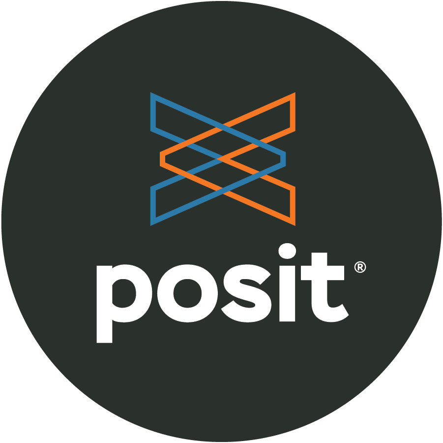

Draft Proposal - Goldsmiths Research Methods in Psychology
Overview
Statistics and Research Methods for Psychological and Behavioural Science
Jin, C., & Wells, J. (2015). Developing open educational resources with students: A case study in an undergraduate course. MERLOT Journal of Online Learning and Teaching, 11(2), 197-213.
Below is an example of an executed code chunk - in html format clicking on would unfold the code that drives the plot and results summary. In pdf format, it’s unfolded and printed.
Annotated Code Example
library(tidyverse)
library(palmerpenguins)
penguins |>
mutate(
bill_ratio = bill_depth_mm / bill_length_mm,
bill_area = bill_depth_mm * bill_length_mm
)- 1
-
Take
penguins, and then, - 2
- add new columns for the bill ratio and bill area.
The Psychology department at Goldsmiths has a number of differentiating features, upon which it must build in order to ensure it remains attractive and distinctive.
- Alchemical, interdisciplinary research programmes and projects
- Passion for empowering students and producing creative, skillful, disruptive agents of change
- Blend of Art and Science, craft, entrepreneurship, massively transferable mind-set/skill-set
Research Methods has to be an adventure, “Alive” with enthusiasm, inspiring curiosity and intellectual problem-solving.
We have to break the A-Level preconception that Research Methods is dry, maths-like or indeed difficult.
This must be achieved by: - Practical First - The majority of lab sessions should be practical and ‘hands on’! - Only present research/methods/topics that are ‘ownable’ - where we have expertise, cachet and competitive advantage - and that could NOT be done at school - ‘Relevant & Applicable’ above all else. Nothing is taught ‘because the BPS says we have to’ or that doesn’t have widespread use in a range of future endeavours - Demonstrate and model intellectual virtue, curiosity, empiricism, skepticism, humility and
We embrace an Open Science approach in our efforts to cultivate your critical evaluation skills, enhance your understanding of the significance - and power - of research, and equip you with the necessary graduate-level skills to collect, handle, and interpret data using programming software for statistical model development, visualisation and analysis.
Through lectures, interactive group discussions, online skills development modules, and practical lab sessions, we will ignite your enthusiasm for Psychology and Behavioural Science research and help you develop the fundamental skills, knowledge - and confidence - required to become a Psychology literate, disruptive scientist of the future. Tada!
AUTHENTIC ASSESSMENT - OPenAI
“Authentic assessment” generally refers to assignments that reflect the skills students will use in their post-graduation careers and life experiences (Archbald, 1991; Gulikers et al., 2004). This is distinct from traditional assessments such as closed-book exams and academic essays (Macandrew & Edwards, 2002). For psychology, authentic assessments may involve the development of scientific inquiry skills, such as a practical research report (Halonen et al., 2003). In clinical psychology, this can include formulation of case studies or mock practitioner dialogues (Villarroel et al., 2018). Other examples of authentic assessments include writing letters to non-psychology audiences (Cranney, 2013), critical evaluation of media materials (Halpern & Butler, 2011), written reflections of volunteering (Hadlington; as cited in Taylor & Hulme, 2015), and research project interviews (Turner & Davila-Ross, 2015). All of these are designed to promote psychological literacy by encouraging communication with non-experts and application of psychology content (Hulme, 2014).
Central to psychological literacy is the effective communication of psychology in practice (Trapp et al., 2011). To this end, blog writing may be an effective assessment for capturing and promoting students’ psychological literacy. Blogs are a web-based form of journal or writing platform, and are useful for disseminating information (Richardson, 2006). They are also increasingly popular for assessing written language skills (Kim, 2008; Lee, 2010; Raith, 2009; Williams & Jacobs, 2004). Blog writing may help students take different perspectives, develop a critical appraisal of content, and become more self-reflective (Frye et al., 2010; Jimoyiannis & Angelaina, 2012). It also empowers and engages students (Creme & Hunt, 2002), a core goal of psychology education (Ishak & Salter, 2017). It enhances academic language learning (Murray et al., 2007) and assesses different skills than traditional forms of assessment (Morris et al., 2013). Studies show that students report high levels of engagement with blog writing (Hindley, 2018).
Blog writing may help students overcome the challenge of academic essay writing (Ishak & Salter, 2017) since it is less rigidly governed by academic norms (Bennett et al., 2012) and involves more reflective, creative, and critical tone (Arslan & Aysel, 2010; Novakovich & Long, 2013). It also provides an opportunity to communicate psychology content to a wider audience (Gardiner et al., 2018; Schmidt, 2008; Relojo, 2017). It has been embedded successfully in many different subjects in higher education, such as pharmacy (Dunne & Ryan, 2016), anthropology (Walker & Chatzigavriil, 2017), professional development (Shanks, 2020), and English literature (Agarwal, 2017). The British Psychological Society, 2019 and the American Psychological Association (2013) stress the importance of critical evaluation and reflection, which is compatible with blog writing. Research shows that blog writing prompts critical thinking and reflection (Chretien et al., 2008; Novakovich, 2016). Challenges to implementing blog writing as an assessment include students having little to no previous experience (Kerawalla et al., 2009). Blog writing should be grounded effectively in course materials, have clear expectations, and be understood through a lens of psychological literacy (Cranney et al., 2008, 2012). We propose that blog writing may provide a useful opportunity to allow students to apply their psychology content in a critical, creative, and non-conventional way.
- OPENAIabove
BPS Guidelines from OpenAI
1. Ensure that students have a clear understanding of the research methods used in their field of study.
Provide opportunities for students to develop critical thinking skills in relation to the research methods used.
Encourage students to practice the research methods in a safe and secure environment.
Develop a range of teaching materials and resources that best support student learning.
Encourage students to become independent learners by providing appropriate scaffolding and support.
Encourage students to become active participants in their learning process.
Facilitate meaningful discussions about research methods and the application of research methods in practice.
Incorporate ethical considerations into the research methods teaching.
Promote the use of technology to support the teaching of research methods.
Monitor and evaluate students’ progress throughout the teaching period.
Source: British Psychological Society (BPS). (2020). Guidance for the teaching of undergraduate research methods. Retrieved from https://www.bps.org.uk/publications/guidance-teaching-undergraduate-research-methods
Research methods Research methods must be delivered at Level 5 or Level 6. Research methods are integral to Psychology and students obtain a sound knowledge of, and a proven ability to use, a range of methods appropriately. Knowledge and understanding of how to obtain and analyse evidence is best acquired and demonstrated through extensive and progressive empirical work in laboratory and naturalistic settings through all stages of a degree. [section 3.4 Subject Benchmark Statement] Psychology students learn the basic principles of sound data collection. Given the broad theoretical scope of Psychology, rigorous specialist training is required to engender a critical understanding of the role of experimental design, the choice of research methods employed, and the analytic approach taken, for testing psychological theories. [section 3.5 Subject Benchmark Statement] Programmes’ coverage of research methods should support students’ engagement with the sub-areas listed above, and should be directed towards supporting students’ attainment of the subject-specific skills highlighted in section 4.4 of the Subject Benchmark Statement. As they progress through the programme, students should be able to: • apply multiple perspectives to psychological issues, recognising that psychology involves a range of research methods, theories, evidence and applications; • integrate ideas and findings across the multiple perspectives in psychology and recognise distinctive psychological approaches to relevant issues; • identify and evaluate patterns in behaviour, psychological functioning and experience; • generate and explore hypotheses and research questions drawing on relevant theory and research; • carry out empirical studies involving a variety of methods of data collection, including experiments, observation, questionnaires, interviews and focus groups; • analyse, present and evaluate quantitative and qualitative data and evaluate research findings; • employ evidence-based reasoning and examine practical, theoretical and ethical issues associated with the range of methodologies; • use a variety of psychological tools, including specialist software, laboratory equipment and psychometric instruments; • apply psychological knowledge ethically and safely to real world problems; and • critically evaluate psychological theory and research.
Communicate complex information effectively using appropriate written, oral, graphical and electronic means, taking into account diversity among individuals to whom the information is communicated.
Explain the potential impact of psychological research and theory on a broad range of real world settings and situations (e.g., classrooms, industry, commerce, healthcare, as well as local and global communities).
Problem-solve and reason scientifically. Specifically, graduates will be able to identify and pose research questions, consider alternative approaches to their solutions, and evaluate outcomes.
Be sensitive to contextual and interpersonal factors. Graduates will be familiar with the complexity of the factors that shape behaviour and social interaction which, in turn, will make them more aware of the bases of problems and interpersonal conflicts.
or Be a self-critical learner, showing sensitivity to contextual and interpersonal factors. Graduates will be familiar with the complexity of the factors that shape behaviour and social interaction which, in turn, will make them more aware of the bases of problems and interpersonal conflicts.
Show an understanding of various research paradigms, methods, and evaluation procedures, including statistical analysis, as well as their constraints.
Design, carry out, evaluate and interpret scientifically rigorous and ethically sound studies both independently and collaboratively, utilizing quantitative and qualitative methods, statistical analysis and modern digital software.
Psychological literacy is the ability to understand and apply psychological principles and theories to everyday life. This includes the ability to understand how psychological processes and phenomena influence our behavior, emotions, thoughts, and relationships. It also includes the capacity to use psychological knowledge to make informed decisions and to better understand, explain, and predict the behavior of self and others.
Psychology graduates are highly sought after by employers due to their ability to formulate and communicate well-reasoned, evidence-based, and statistically defensible arguments based on their expertise in the study of human behavior and its causes. On top of this, psychology graduates possess the skills to work independently or collaboratively, as well as strong numerical capabilities, verbal and written communication skills, and an up-to-date knowledge of digital technologies applicable to a wide range of occupational fields.
Intended Learning Outcomes
Intended Learning Outcomes
Create reproducible data analysis scripts and reports within the R statistical programming environment.
QAA Benchmarks
Subject Knowledge and Understanding
6.3.4 demonstrate detailed knowledge of several specialised areas and/or applications, some of which are at the cutting edge of research in the discipline 6.3.5 demonstrate a systematic knowledge of a range of research paradigms, research methods and measurement techniques, including statistics and probability, and be aware of their limitations.
Subject-specific skills
PS510XX - RM1 - Introduction to Research Methods and Data Skills
PS520XX - RM2 - Research Methods in Practice and Data Skills
PS530XX - RM3 - Research Project Incubator
*PS710XX - Practical Research Skills
Lectures - Overview of key concepts/context and preview Lab practicals / Data Skills
Labs - Practical or activity based (inc. Group Work)
Executive Summary by year
Y1 - showcase and active participation/skill development
Y2 - Practical drive towards self-motivated research
Y3 - Competent research
Social Constructivist
PeerMark
Podcast/Webpage/Blog
Integrate own interest/guided by stream/lab
Technical Overview

R is primarily a computer programming language for statistical analysis. It is free, and open-source (many people contribute to developing it), and runs on most operating systems or through an internet browser, and so there are few obstacles to its use by the normal undergraduate population (compare to SPSS).
It is a powerful language that can be used for all sorts of mathematical operations, data-processing, analysis, and graphical display of data - it is used more a more frequently in corporate settings, unlike ‘pay to play’ software such as SPSS.
I even used R to write this lab manual. And, I use R all the time for my own research, because it makes data-analyis fast, efficient, transparent, reproducible, and exciting

(Formerly RStudio)

Quarto is an open-source scientific and technical publishing system built on Pandoc. Quarto documents are authored using markdown, an easy to write plain text format.
In addition to the core capabilities of Pandoc, Quarto includes:
Embedding code and output from Python, R, Julia, and JavaScript via integration with Jupyter, Knitr, and Observable.
A variety of extensions to Pandoc markdown useful for technical writing including cross-references, sub-figures, layout panels, hoverable citations and footnotes, callouts, and more.
A project system for rendering groups of documents at once, sharing options across documents, and producing aggregate output like websites and books.
Authoring using a wide variety of editors and notebooks including JupyterLab, RStudio, and VS Code.
A visual markdown editor that provides a productive writing interface for composing long-form documents.
Learn more about Quarto at https://quarto.org.
R will be used. Gold standard statistical programming language
For literate programming (The concept of “literate programming” was originally introduced by Donald Knuth in 1984 )
Formerly RStudio. The Interactive Development Enviornment for use of R.
Hours specification (e.g.) Years 1 & 2
| Activity | Time | Note |
|---|---|---|
| Lectures | 40 | 2hrs/week |
| Labs | 40 | 2hrs/week |
| Data Skills (Online) | 40 | 2hrs/week |
| Guided Reading/viewing | 40 | 2hrs/week |
| RPS | 20 | 1hr/week |
| Independent Study/Coursework | 120 | 6hr/week |
Programme Overview
Pre-Arrival onwards / Onboarding
Showcase in Induction week - Staff labs and research projects for the year.
Year One students self-test
MSc Students - ditto and ability to shop around for supervision
Year 2 develop their pods? Show Y1 and Foundations what they did last year
Year 3/MSc students - Research Bootcamp and refreshers/skills workshops
Support PhD students and staff

 This website/book is licensed under a Creative Commons Attribution 4.0 International License.
This website/book is licensed under a Creative Commons Attribution 4.0 International License.